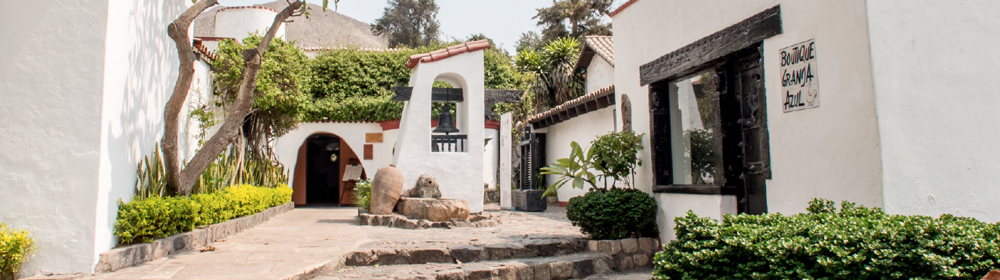

<html lang="en"></html>

    <meta charset="UTF-8">
    <meta name="viewport" content="width=device-width, initial-scale=1.0">
    <title>La Granja Azul</title>

    <!-- bootstrap icons -->
    <link rel="stylesheet" href="https://cdn.jsdelivr.net/npm/bootstrap-icons@1.11.3/font/bootstrap-icons.min.css">

    <!-- fontawesome icons-->
    <script src="https://kit.fontawesome.com/d70c66a935.js" crossorigin="anonymous"></script>

    <!-- google fonts | SUSE -->
    <link rel="preconnect" href="https://fonts.googleapis.com">
    <link rel="preconnect" href="https://fonts.gstatic.com" crossorigin>
    <link href="https://fonts.googleapis.com/css2?family=SUSE:wght@100..800&display=swap" rel="stylesheet">

    <!-- google fonts | Sevillana -->
    <link rel="preconnect" href="https://fonts.googleapis.com">
    <link rel="preconnect" href="https://fonts.gstatic.com" crossorigin>
    <link href="https://fonts.googleapis.com/css2?family=Sevillana&display=swap" rel="stylesheet">

    <!-- Estilos Bootstrap-->
    <link href="https://cdn.jsdelivr.net/npm/bootstrap@5.3.3/dist/css/bootstrap.min.css" rel="stylesheet" integrity="sha384-QWTKZyjpPEjISv5WaRU9OFeRpok6YctnYmDr5pNlyT2bRjXh0JMhjY6hW+ALEwIH" crossorigin="anonymous">

    <script src="https://cdn.jsdelivr.net/npm/bootstrap@5.3.3/dist/js/bootstrap.bundle.min.js" integrity="sha384-YvpcrYf0tY3lHB60NNkmXc5s9fDVZLESaAA55NDzOxhy9GkcIdslK1eN7N6jIeHz" crossorigin="anonymous"></script>

    <!-- Estilos Propios-->
     <link rel="stylesheet" href="./css/root.css">
     <link rel="stylesheet" href="./css/restaurantes.css">
     <link rel="stylesheet" href="./css/header.css">
    <link rel="stylesheet" href="./css/footer.css">

</head>
<body>
    
    <header class="container_header">
        <div class="content_header">
            <article class="first_content-header">
                <div class="btn_delivery-header">
                    <a href="" class="link_delivery-header">DELIVERY <i class="fa-regular fa-hand-point-right"></i> PIDE AQUI</a>
                </div>
        
                <div class="logo_header">
                    
                </div>
        
                <div class="btn_reservas-header">
                    <a href="" class="link_reserva-header">Reservas <br> El Polo</a>
                    <a href="" class="link_reserva-header">Reservas <br> Santa Clara</a>
                    <a href="" class="link_reserva-header">Reservas <br> San Isidro</a>
                </div>
            </article>
    
            <article class="second_content-header">
                <nav class="menu_header">
                    <a href="./index.html" class="link_menu-header">HOME</a>
                    <a href="./nosotros.html" class="link_menu-header">NOSOTROS</a>
                    <a href="./cartas.html" class="link_menu-header">CARTAS</a>
                    <a href="./delivery.html" class="link_menu-header">DELIVERY</a>
                    <a href="./restaurantes.html" class="link_menu-header active">RESTAURANTES</a>
                    <a href="./contacto.html" class="link_menu-header">CONTACTO</a>
                </nav>
            </article>
        </div>
    </header>

    <main class="container_restaurantes">
        <blockquote>
            
            <h2>Encuentranos en</h2>
        </blockquote>
        <article>
            <figure>
                
            </figure>
            <blockquote class="secondary_bg-color">
                <h3>Granja Azul Grill El Polo</h3>
                <h4>Centro Comercial Urban Plaza El Polo – Piso 3 (Av. El Polo N° 695 – Surco)</h4>
                <ul>
                    <li>Horario de atención:</li>
                    <li>Domingo a jueves de 12 pm. a 11 pm. y</li>
                    <li>viernes y sábado de 12 pm. a 1 am.</li>
                </ul>
            </blockquote>
        </article>
        <article>
            <figure>
                
            </figure>
            <blockquote class="secondary_bg-color">
                <h3>Granja Azul Santa Clara</h3>
                <h4>Carretera Central Km. 11.5, Santa Clara - Ate</h4>
                <ul>
                    <li>Horario de atención:</li>
                    <li>De martes a jueves de 12 pm. a 5 pm. y</li>
                    <li>de viernes a domingo de 12 pm. a 6 pm.</li>
                </ul>
            </blockquote>
        </article>
        <article>
            <figure>
                
            </figure>
            <blockquote class="secondary_bg-color">
                <h3>Granja Azul Grill San Isidro</h3>
                <h4>Av. Augusto Pérez Aranibar 1998 - San Isidro (Ex. Av. El Ejército)</h4>
                <ul>
                    <li>Horario de atención:</li>
                    <li>De lunes a jueves de 12 pm. a 10 pm.,</li>
                    <li>viernes y sábado de 12 pm. a 11 pm.</li>
                    <li>y domingo de 12 pm. a 6 pm.</li>
                </ul>
            </blockquote>
        </article>
        <article class="secondary_bg-color">
            <figure>
                
            </figure>
            <blockquote>
                <h3>Granja Azul Asia</h3>
                <h4>Atención durante la temporada de verano.</h4>
            </blockquote>
        </article>
    </main>

    <footer class="container_footer">
        <div class="content_footer">
            <article class="first_sector-footer">
                <section class="content_social-footer">
                    <p>SIGUENOS EN</p>
                    <ul class="icons_social-footer">
                        <li><a href=""><i class="bi bi-instagram"></i></a></li>
                        <li><a href=""><i class="bi bi-facebook"></i></a></li>
                        <li><a href="">@granjaazul</a></li>
                    </ul>
                </section>
                <section class="info_footer">
                    <h3>Suscribete</h3>
                    <p>Recibe nuestras novedades y promociones</p>
                    <a href="#">SUSCRIBETE AQUI</a>
                </section>
                <nav class="nav_footer">          
                    <ul>
                        <li><a href="./nosotros.html">Nosotros</a></li>
                        <li><a href="">Delivery</a></li>
                        <li><a href="">Comprobante Electrico</a></li>
                        <li><a href="">Politica de Privacidad</a></li>
                        <li class="link-nav_footer"><i class="fa-solid fa-book-open"></i><a href=""></i>Libro de reclamaciones</a></li>
                    </ul>
                </nav>
            </article>

            <hr>

            <article>
                <aside class="copy_footer">
                    <p>Granja Azul S.A - RUC: 20112378864</p>
                </aside>
            </article>
        </div>
    </footer>

</body>
</html>